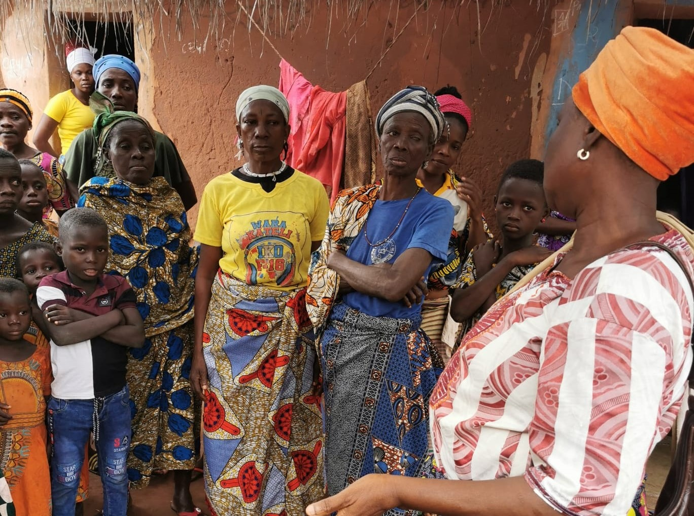
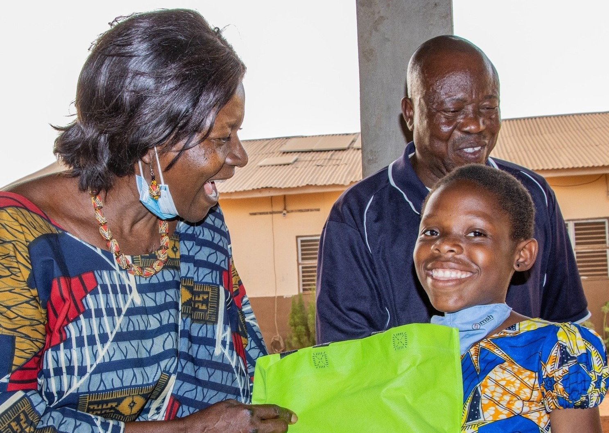
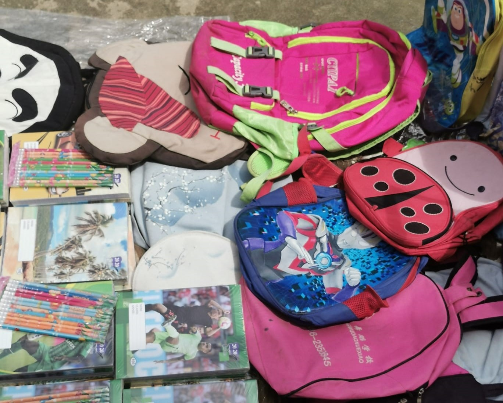
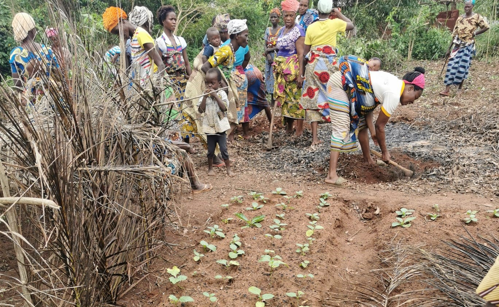
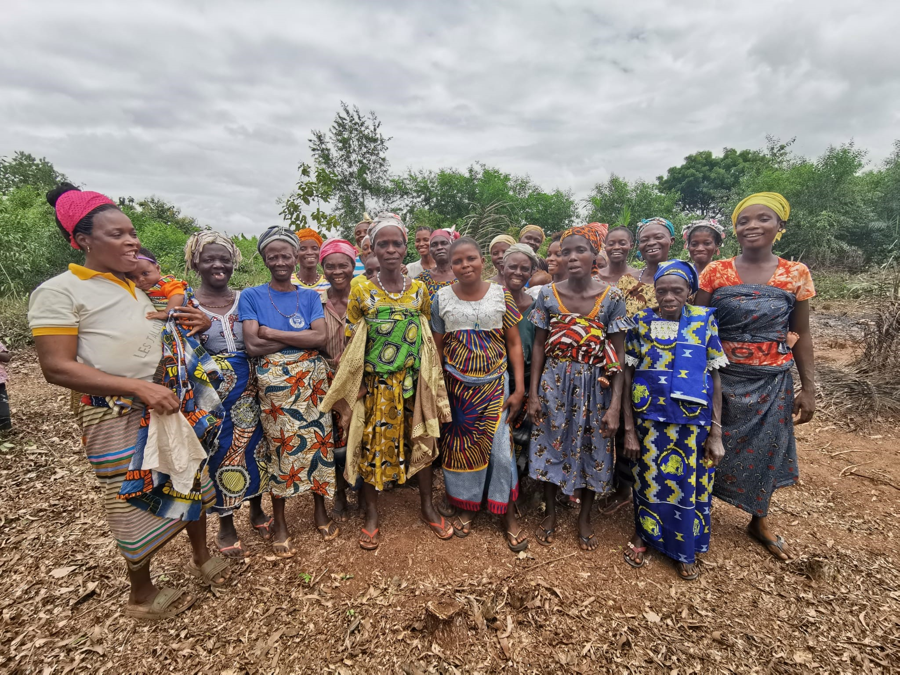
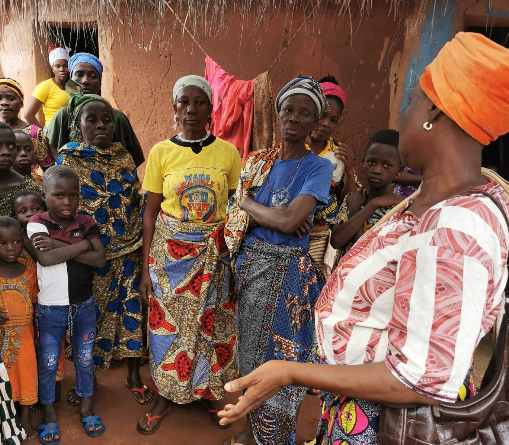

Orphelins / Enfants de la rue / Exploités
SOUTIEN ÉDUCATIF

Fourniture de Matériel Scolaire : Distribution de fournitures scolaires, uniformes et livres pour permettre aux orphelins de poursuivre leur éducation sans obstacles matériels.
Cours de rattrapage : Organisation de cours de soutien pour les élèves en difficulté afin de les aider à améliorer leurs performances académiques
SOUTIEN PSYCHOSOCIAL

Counseling : Mise en place de séances de counseling pour aider les enfants à surmonter leurs traumatismes et à développer une résilience émotionnelle.
Activités Récréatives et Culturelles : Organisation d'activités ludiques et culturelles pour favoriser le bien-être émotionnel et social des enfants.
soutien matériel
Hébergement : Créer des centres d'accueil offrant un environnement sûr et stable pour les enfants de la rue et les orphelins.
Nourriture et Soins de Santé : Fourniture de colis alimentaires et accès à des soins médicaux réguliers pour assurer la bonne santé des orphelins.
Intégration Sociale
Mentorat : Mise en place de programmes de mentorat où des adultes bienveillants accompagnent les orphelins dans leur développement personnel et professionnel.
Projets Communautaires : Encouragement à la participation des orphelins dans des projets communautaires pour renforcer leur sentiment d'appartenance et leur donner un rôle actif dans la société.
Parrainage : Parrainage par des familles ou des individus pour fournir un soutien moral et financier.
Jeunes de la rue / en difficultés
Éducation et Formation
Accès à l'éducation :
Rattrapage Scolaire : Programmes éducatifs pour aider les jeunes à reprendre leur scolarité et à obtenir des diplômes.
Formation Professionnelle : Cours de formation professionnelle pour acquérir des compétences pratiques dans divers métiers.
Soutien scolaire :
Fourniture de Matériel : Distribution de fournitures scolaires, manuels et uniformes.
Soutien Financier : Prise en charge dans des formations spécialisées.
Formation & Insertion Professionnelle
Orientation Professionnelle : Conseils en orientation pour aider les jeunes à identifier et à suivre des parcours professionnels qui correspondent à leurs intérêts et aptitudes.
Stages Professionnels : Placement en stages pour acquérir une expérience professionnelle concrète.
Aide à l'Emploi : Assistance dans la recherche d'emploi, rédaction de CV et préparation aux entretiens.
Programmes d'Entrepreneuriat : Formation et soutien aux jeunes souhaitant démarrer leur propre entreprise, y compris des micro-crédits et des conseils en gestion d'entreprise.
Soutien Psychosocial
Conseils & thérapie :
Counseling Individuel et de Groupe : Séances de thérapie pour aider les jeunes à surmonter leurs traumatismes et à développer des mécanismes de résilience.
Soutien Émotionnel : Présence d’adultes bienveillants dans le domaine médico-social afin de fournir un soutien émotionnel continu.
Activités récréatives & culturelles :
Sports et Loisirs : Organisation d'activités sportives et récréatives pour favoriser le développement social et physique des jeunes.
Ateliers Artistiques : Ateliers de musique, d'art et de théâtre pour encourager l'expression créative et renforcer la confiance en soi.
Intégration Sociale Professionnelle
Programmes de Mentorat : Mise en relation avec des mentors qui peuvent offrir des conseils et un soutien à long terme.
Parrainage : Parrainage par des familles ou des individus pour fournir un soutien moral et financier.
Partenariats : Collaboration avec d'autres organisations et structures pour maximiser l'impact des actions menées.
Veuves / Familles abandonnées
Soutien Économique et Matériel
Microcrédits Scolaire : Octroi de microcrédits pour encourager les veuves à démarrer des petites entreprises et à devenir financièrement indépendantes.
Mise en place des coopératives : Dispositif d'accompagnement et de soutien technique, financier, matériel…
Aide Matérielle : Fournir des biens de première nécessité tels que des vêtements, de la nourriture, des fournitures scolaires et des produits d'hygiène.
Formation Professionnelle
Programmes de Formation : Cours de formation professionnelle pour acquérir de nouvelles compétences et améliorer l'employabilité.
Ateliers de Développement des Compétences : Ateliers sur des compétences pratiques telles que la couture, la cuisine, l'artisanat, etc
Programmes d'Alphabétisation : Cours pour améliorer les compétences en lecture et écriture, essentiels pour l'emploi et la gestion des affaires.
Counseling et Thérapie
Soutien Psychologique : Séances de counseling pour aider les veuves et les familles abandonnées à surmonter leurs traumatismes et à gérer le stress et l'anxiété.
Groupes de Soutien : Organisation de groupes de soutien où les femmes peuvent partager leurs expériences et trouver du réconfort auprès de leurs pairs.
Activités Récréatives et Culturelles
Activités Sociales : Organisation d'événements et d'activités sociales pour favoriser l'intégration sociale et briser l'isolement.
Programmes Culturels : Participation à des événements culturels pour enrichir la vie sociale et culturelle des veuves et de leurs enfants